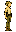
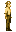
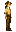
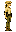
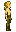
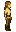

# Elf
Generated: 2026-07-15
Ancestrypage. Current status:planned.
| Field | Value |
|---|---|
| ID | elf |
| Page type | Ancestry |
| Status | planned |
| Implementation phase | B |
| Implementation priority | 3 |
| Spawn band | surface |
| Preferred biomes | forest, ancient_forest, riverlands |
| Description | Forest-keepers who guided early Coheronia's growth through harmony with the land. |
| Visual families | Default: 1 canonical image + 2 variants; Female: 1 canonical image + 2 variants |
Summary
Elf is a validated ancestry definition loaded from data/ancestries.json. The matching species is live/playable through data/character_data.json; expanded ancestry-system fields remain planned.
Body Art Reference
This ancestry currently maps to live player body art, so the current wiki mirrors those authored visuals here.
Default body (elf)



| Asset id | Role | File |
|---|---|---|
elf | Canonical image | ../../../../art/generated/players/elf.png |
elf_01 | Variant 1 | ../../../../art/generated/players/elf_01.png |
elf_02 | Variant 2 | ../../../../art/generated/players/elf_02.png |
Female body (elf_female)



| Asset id | Role | File |
|---|---|---|
elf_female | Canonical image | ../../../../art/generated/players/elf_female.png |
elf_female_01 | Variant 1 | ../../../../art/generated/players/elf_female_01.png |
elf_female_02 | Variant 2 | ../../../../art/generated/players/elf_female_02.png |
Effects
| Bucket | Effect | Value |
|---|---|---|
| player_effects | jump_bonus | 0.15 |
| player_effects | forest_movement_mult | 1.1 |
| player_effects | fall_damage_reduction | 0.5 |
| player_effects | carry_efficiency_mult | 0.8 |
| player_effects | notes | ['higher jump', 'better forest movement', 'reduced fall damage', 'plant detection'] |
| settlement_effects | tree_recovery_mult | 1.1 |
| settlement_effects | animal_aggression_reduction | 0.8 |
| settlement_effects | forest_shelter_coherence_bonus | 1.05 |
| settlement_effects | notes | ['stone-heavy industry adds more load'] |